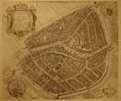
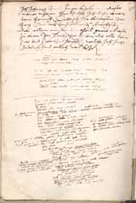
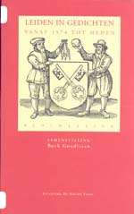
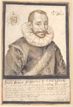
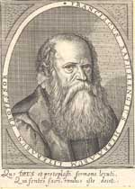
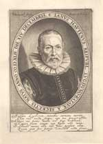

Justus Lipsius 1606 – 2006
Samenstelling: Jeanine de Landtsheer en A.Th. Bouwman
De webpresentatie behandelt de volgende onderwerpen:
4. Leiden
In het laatste kwart van de zestiende eeuw behoorde Leiden met Dordrecht, Delft, Haarlem, Gouda en Amsterdam tot de zes belangrijkste steden van Holland. De lakenindustrie was er al in de late Middeleeuwen van groot belang, maar kreeg na de val van Antwerpen in 1585 een nieuwe impuls. Ook de Antwerpse drukker Christoffel Plantijn had met het oog op de onzekere tijden in 1583 een filiaal in Leiden geopend. Hij werd tot universiteitsdrukker aangesteld – grotendeels op aandrang van Lipsius, wiens hele wetenschappelijke oeuvre door de Officina Plantiniana is gepubliceerd. In 1585 keerde Plantijn terug naar Antwerpen, maar in 1586 werd hij in Leiden opgevolgd door zijn schoonzoon Raphelengius, die met Dousa en Van Hout tot de intimi van Lipsius in Leiden hoorde.
|
4.1 || Lugdun[um] Batavor[um] = Leyden in Hollant.
Leiden: Pieter Bast, 1600. Kopergravure. [BN 009.11.25]. –– Vogelvluchtkaart waarop o.m. te zien: de woning van Lipsius, de woningen van zijn vrienden Dousa, Van Hout en Plantijn (en diens opvolger in de Leidse drukkerij Raphelengius), het Academiegebouw en de tuin van Lipsius. |
|
|  | |
4.2 || ‘I. Lipsii scripta varia autographa’. Manuscript. [Lips. 17]. –– Bundel met eigenhandige aantekeningen van Lipsius over diverse onderwerpen; de keerzijde van het een na laatste blad bevat de kladversie van een schaatsgedicht: Hollandse ijspret te Leiden vereeuwigd in het Latijn van een Brabantse humanist. |
|
|  | |
|
4.3 || Leiden in gedichten vanaf 1574 tot heden. Ed. B. Goudriaan. Leiden 2005. [1752 E 53]. –– Deze recente bloemlezing bevat een vertaling van Lipsius’ schaatsgedicht door Jeanine De Landtsheer. |
|
|  | |
4.4 || Crispijn de Passe, Portret van Janus Dousa, 1591. Gewassen pentekening. [Icones 73(2)]. –– Johan van der Does of Janus Dousa (1545-1604), heer van Noordwijk, Langeveld en Kattendijke, neolatijns dichter, diende de Leidse universiteit als president-curator en sinds 1585 als bibliothecaris. |
|
|  | |
4.5 || J. Meursius, Illustris Academia Lugd.-Batava: id est Virorum Clarissimorum Icones, Elogia ac Vitae. Leiden: A. Clouck, 1613. [662 C 10]. –– De anonieme kopergravure toont het portret van Franciscus Raphelengius (1539-1597), schoonzoon en medewerker van Plantijn in Antwerpen. Zijn zoon Franciscus genoot bij Lipsius in Leiden inwoning en onderricht. In 1586 volgde senior zijn schoonvader op als Leids academiedrukker; hij werd ook Leids hoogleraar Hebreeuws. |
|
|  | |
4.6 || Willem van Swanenburg, Portret van Jan van Hout. Kopergravure. 1608. [PK-P-110.843]. –– Jan van Hout (1542-1609), secretaris van de stad Leiden en van het bestuurscollege van de Universiteit, was tevens een vooraanstaand renaissance-dichter in de Nederlandse taal. Van zijn literaire productie is evenwel weinig bewaard gebleven. |
|
|  | |
| vorige pagina | volgende pagina |